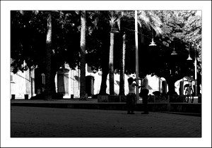

La Plaza de Llorenç Villalonga
La Plaza de Llorenç Villalonga
La plaza de Llorenç Villalonga se encuentra ubicada en la muralla alta de la Ciudad y es donde se encuentra la casa natal de Antonio Maura, político que llegó a ser presidente del Gobierno en el reinado de Alfonso XIII.